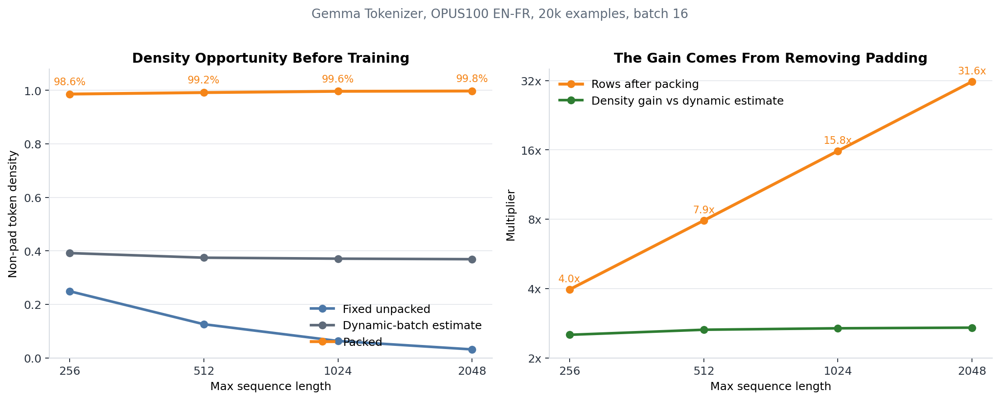
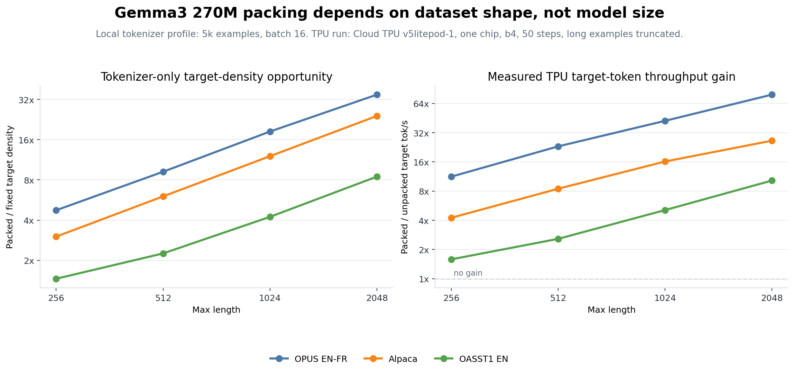
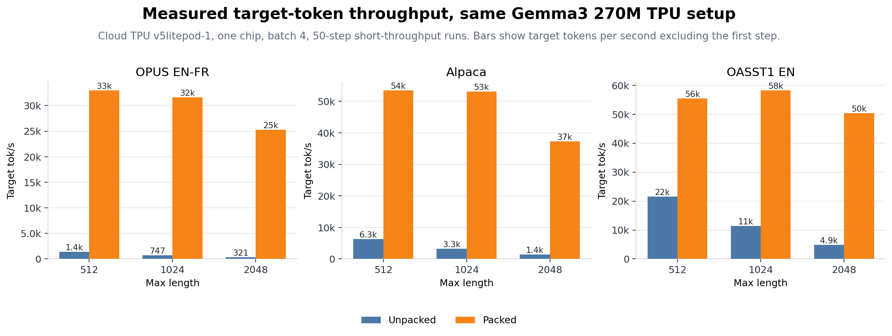
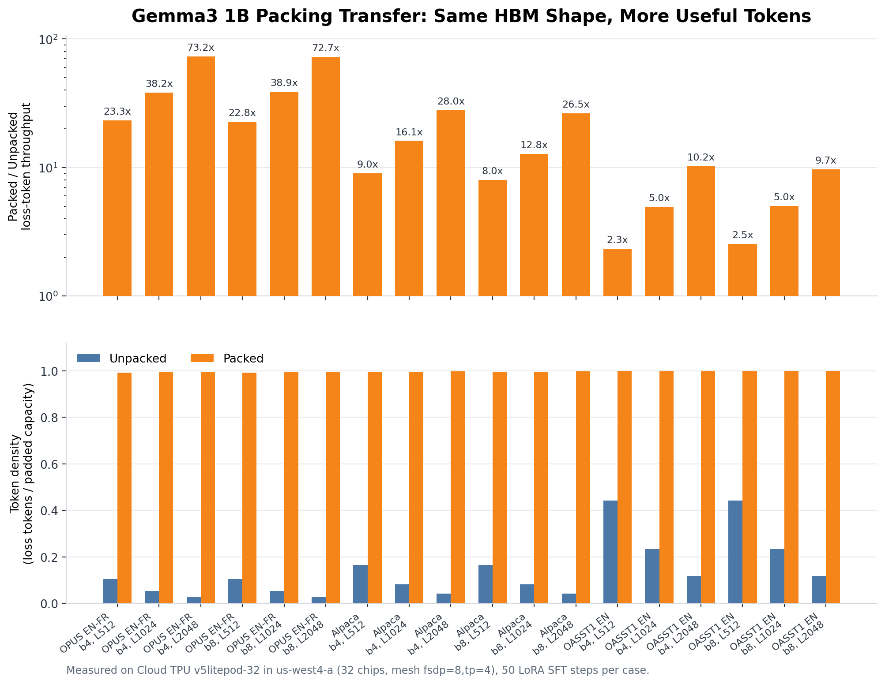
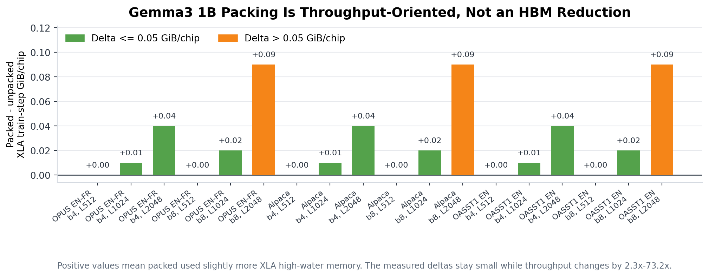
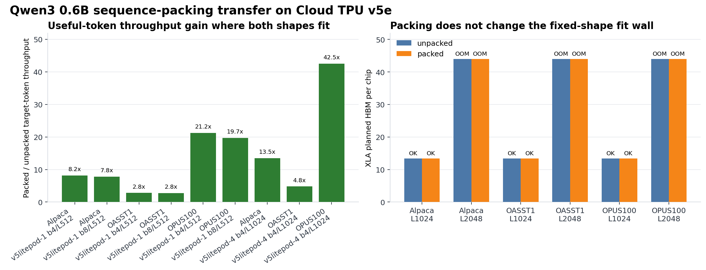
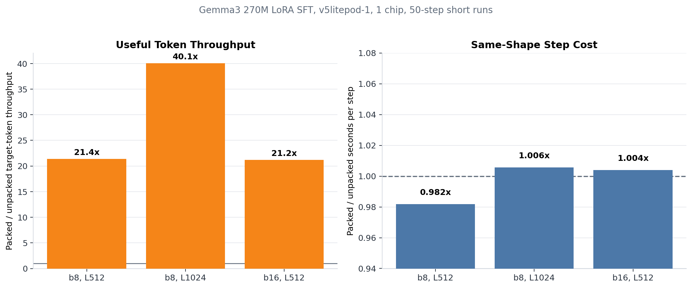
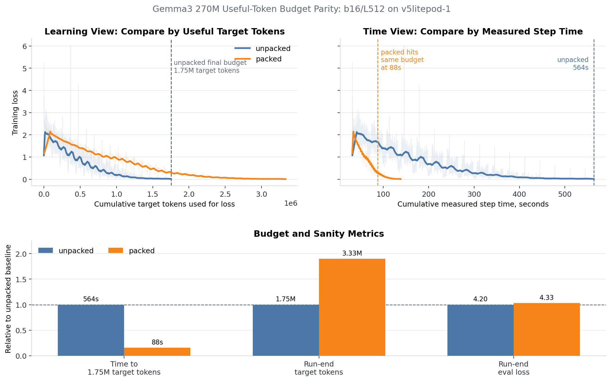
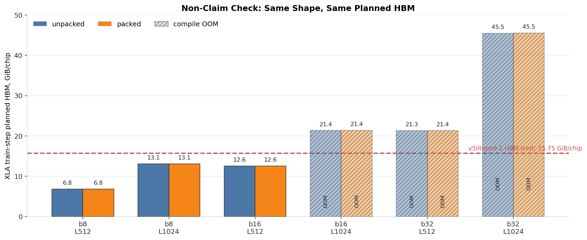

Sequence Packing on JAX/Tunix TPU: Turning Padding Into Useful Tokens
This report makes one deliberately narrow claim: for Gemma LoRA SFT on JAX/Tunix, sequence packing turns padding-heavy fixed rows into useful target tokens. Gemma3 270M is the exhaustive base case. Gemma3 1B and Qwen3 0.6B are transfer checks. Packing is a data-density and useful-token-throughput optimization, not a fixed-shape memory optimization.
Executive Summary
| Question | Result |
|---|---|
| What is being optimized? | Padding waste. Packing combines multiple short SFT examples into one fixed-length row while preserving per-example positions and block-causal attention. |
| How much padding waste was available? | On OPUS100 EN-FR with the Gemma tokenizer and batch 16, fixed unpacked density fell from 24.9% at L256 to 3.2% at L2048, while packed density stayed around 98.6-99.8%. |
| Does this depend on the dataset? | Yes. OPUS100 EN-FR showed the largest gain, Alpaca remained strong, and OASST1 showed a smaller but still clear gain as examples became longer and less padding-heavy. |
| Does it improve useful-token throughput? | Yes. On the original OPUS matched-shape runs, target-token throughput improved by 21.2x to 40.1x; the b4 dataset ablation reached 78.9x at OPUS L2048. The Gemma3 1B transfer check showed the same pattern: OPUS L2048 improved 72.7x-73.2x, Alpaca L2048 improved 26.5x-28.0x, and OASST1 L2048 improved 9.7x-10.2x. The Qwen3 0.6B check showed OPUS gains of 19.7x-21.2x at L512 on one chip and 42.5x at b4/L1024 on four chips. |
| Does same-shape step time change? | Barely in this setup. Packed/unpacked step-time ratios were 0.982x, 1.006x, and 1.004x for the passing matched shapes. |
| Does useful-token training finish faster? | Yes for token budget. Packed reached the unpacked run's 1.75M target-token budget at step 528 in 88s of cumulative step time, versus 5,000 unpacked steps in 564s. |
| Is the optimizer trajectory identical? | No. Packing changes the number of target tokens per optimizer update. Loss should be compared by useful tokens and interpreted with that optimizer-step difference in mind. |
| What is the memory claim? | There is no memory-saving claim. Planned HBM rows are retained only as a negative control showing that packing does not move the fixed-shape fit frontier. |
| Does the 270M result transfer? | Yes for Gemma3 1B and Qwen3 0.6B under the tested setups. The dataset ordering and long-context gains remain the same. |
Experiment Scope
| Field | Value |
|---|---|
| Model | google/gemma-3-270m-it |
| Training mode | Tunix PEFT/LoRA |
| LoRA rank / alpha | rank 16, alpha 32 |
| Main training dataset | OPUS100 EN-FR |
| Dataset ablation | OPUS100 EN-FR, Alpaca, OASST1 EN |
| Transfer check | Gemma3 1B and Qwen3 0.6B on OPUS100 EN-FR, Alpaca, OASST1 EN |
| Prompt format | OPUS quality rows used the Gemma IT translation wrapper; throughput ablations used dataset-specific SFT records with target-only masks |
| Loss mask | target-only |
| TPU | Cloud TPU v5litepod-1, 1 chip for the 270M base case; v5litepod-32, 32 chips for the 1B transfer check; v5litepod-1 and v5litepod-4 for the Qwen3 0.6B transfer check |
| Zone | us-west4-a |
| Mesh | fsdp=1,tp=1 for 270M; fsdp=8,tp=4 for Gemma3 1B; fsdp=1,tp=1 and fsdp=4,tp=1 for Qwen3 0.6B |
| CE path | Default Tunix CE |
| Other patches | CCE, Tiled MLP, activation policy, and Splash Attention disabled |
The local density sweeps used 5k and 20k OPUS100 examples. The dataset
ablation used 5k examples per dataset. The 270M TPU runs used 5k examples on
v5litepod-1, one chip. The 1B transfer check used the same 5k-example dataset
matrix on v5litepod-32, 32 chips, with fsdp=8,tp=4. The Qwen3 0.6B transfer
check used the same three datasets, with one-chip L512 rows and four-chip L1024
rows where the longer context fit.
1. The Dataset Has a Large Packing Opportunity
Before loading the model, the Gemma tokenizer already shows why packing is worth testing. With 20k OPUS100 EN-FR examples and batch 16, fixed unpacked density falls as max length grows: 24.9% at L256, 12.6% at L512, 6.3% at L1024, and 3.2% at L2048. Packed density stays around 98.6-99.8%.

The most important number here is not memory. It is row reduction. At L512, 20k examples collapse to 2,535 packed rows, a 7.9x row reduction. At L2048, they collapse to 632 rows, a 31.6x row reduction. That does not make the model shape smaller during a given step; it makes each fixed row carry far more real training content.
| Max length | Fixed density | Dynamic estimate | Packed density | Row reduction |
|---|---|---|---|---|
| 256 | 24.9% | 39.2% | 98.6% | 4.0x |
| 512 | 12.6% | 37.4% | 99.2% | 7.9x |
| 1024 | 6.3% | 37.1% | 99.6% | 15.8x |
| 2048 | 3.2% | 36.9% | 99.8% | 31.6x |
2. Dataset Shape Decides the Gain
Packing is model-agnostic at the mechanism level, but the payoff is not dataset-agnostic. It depends on how many supervised target tokens survive inside each fixed row. To test that directly, the 270M rerun added a max-length sweep over three SFT-like datasets: OPUS100 EN-FR, Alpaca, and OASST1 English assistant turns.

The left panel is tokenizer-only. It asks how much target-token density packing
could recover before any model is loaded. The right panel is the corresponding
measured TPU gain for the collected short runs, using the same Gemma3 270M
LoRA setup on one v5litepod-1 chip with batch 4 and 50 measured steps.
| Dataset | L512 profile gain | L2048 profile gain | L512 TPU gain | L2048 TPU gain | Interpretation |
|---|---|---|---|---|---|
| OPUS EN-FR | 9.2x | 34.8x | 23.1x | 78.9x | Very short examples; longer context mostly creates padding unless packed. |
| Alpaca | 6.0x | 24.1x | 8.5x | 26.5x | Short-to-medium instruction records; strong and stable packing case. |
| OASST1 EN | 2.3x | 8.5x | 2.6x | 10.3x | Longer conversational turns; still useful, but less dramatic. |
This is the cleanest way to read packing: max length amplifies the win only when examples are short relative to the row. OPUS and Alpaca therefore improve as context length grows. OASST improves more slowly because its examples are longer and already fill more of each fixed row.
For absolute measured throughput, the retained TPU rows are:

3. Transfer Checks Preserve the Story
The 270M result should not be read as a tiny-model curiosity. To check transfer
without changing the claim, the same short-throughput matrix was run on
Gemma3 1B with the same three datasets, b4/b8, L512/L1024/L2048, 50 LoRA SFT
steps per case, and default CE. The TPU was v5litepod-32 in us-west4-a
with 32 chips and mesh fsdp=8,tp=4.

The shape of the result is the same as 270M: packed rows are nearly full, while unpacked target-token density falls as max length grows. The payoff remains dataset-dependent:
| Dataset | b4/L2048 gain | b8/L2048 gain | Why |
|---|---|---|---|
| OPUS EN-FR | 73.2x | 72.7x | Very short translation pairs; L2048 is mostly padding unless packed. |
| Alpaca | 28.0x | 26.5x | Short-to-medium instruction records; still highly padding-heavy at L2048. |
| OASST1 EN | 10.2x | 9.7x | Longer assistant turns; unpacked rows already carry more useful tokens. |
Memory stays a negative control rather than the headline. Packed and unpacked
use the same fixed (batch, length) shape, and the measured XLA high-water
deltas were small:

This 1B run also exposed a practical sharding note. On v5litepod-16 and on
v5litepod-32 with FSDP-only style sharding, b8/L2048 did not fit. The retained
1B matrix therefore uses fsdp=8,tp=4. That setup detail affects fit, but it
does not change the packing interpretation: once the fixed shape fits, packing
fills that shape with useful tokens instead of padding.
The non-Gemma Qwen3 0.6B check keeps the same interpretation. It used
Qwen/Qwen3-0.6B, one-chip L512 rows on v5litepod-1, and four-chip L1024 rows
on v5litepod-4. The result is again dataset-shaped: OPUS benefits most,
Alpaca remains strong, and OASST1 is smaller because its examples are already
longer.

| Dataset / shape | TPU | Useful-token throughput gain | Interpretation |
|---|---|---|---|
| OPUS b4/L512 | v5litepod-1 |
21.2x | Short translation examples; high padding waste. |
| OPUS b8/L512 | v5litepod-1 |
19.7x | Same dataset pattern at larger batch. |
| OPUS b4/L1024 | v5litepod-4 |
42.5x | Longer context amplifies padding waste once the shape fits. |
| Alpaca b4/L512 | v5litepod-1 |
8.2x | Short-to-medium instruction rows. |
| Alpaca b4/L1024 | v5litepod-4 |
13.5x | Longer context increases the packing opportunity. |
| OASST1 b4/L512 | v5litepod-1 |
2.8x | Longer assistant turns; less padding to remove. |
| OASST1 b4/L1024 | v5litepod-4 |
4.8x | Still useful, but much less dramatic than OPUS. |
The right panel is the negative control. Packed and unpacked have the same
fixed (batch, length) shape, so they also share the same fit wall: at
four-chip b4/L2048, both variants are OOM with the same planned-HBM band. This
is exactly what we want from the claim boundary. Packing changes how much useful
training data each row carries; it does not make a fixed row cheaper to compile.
4. The Throughput Gain Is Real When the Shape Fits
For the passing matched shapes, step time stayed in the same band while target-token throughput increased sharply.

| Shape | Unpacked target tok/s | Packed target tok/s | Throughput gain | Step-time ratio |
|---|---|---|---|---|
| b8/L512 | 1.59k/s | 34.01k/s | 21.4x | 0.982x |
| b8/L1024 | 0.74k/s | 29.83k/s | 40.1x | 1.006x |
| b16/L512 | 1.54k/s | 32.62k/s | 21.2x | 1.004x |
The b8/L1024 row gets the largest throughput gain because fixed unpacked target-token density is especially low at that shape. The model is doing about the same fixed-shape work either way; packed batches simply waste far fewer positions.
5. Useful-Token Budget View
The quality sanity run used b16/L512 for both variants:
| Variant | Steps | Final target tokens | Cumulative step time | Wall time | Eval loss |
|---|---|---|---|---|---|
| unpacked | 5,000 | 1.75M | 564s | 604s | 4.204 |
| packed | 1,000 | 3.33M | 138s | 177s | 4.330 |
Packed reached the unpacked run's final 1.75M target-token budget at step 528, after 88s of cumulative step time. The unpacked run needed 5,000 steps and 564s of cumulative step time to reach the same budget. That is a 6.4x time-to-budget gain in this run.

The loss figure deliberately has two views. The useful-token view asks what the model achieved after seeing a given number of supervised target tokens. The time view asks how quickly each input pipeline moved through training. Packing looks strongest in the time view because it reaches the same 1.75M target-token budget far earlier.
The useful-token view is the tradeoff. Packing delivers many more target tokens per optimizer update, so the packed and unpacked loss curves should not be read as identical optimizer trajectories. If an experiment needs the same number of optimizer updates, the packed run should be scheduled differently. If it needs the same useful-token budget, packing can reach that budget much faster.
The eval losses are retained only as a sanity check that both jobs completed normal Tunix training and evaluation. They are not presented as a translation quality benchmark.
6. Non-Claim Check: Same Shape, Same Planned HBM
The short TPU matrix also records planned HBM, but only as a guardrail. Packing
changes token layout and masks inside a fixed row; it does not change
(batch, length). Therefore the planned HBM footprint should remain the same.

That is what happened. Passing and failing shapes had nearly identical planned HBM for packed and unpacked variants.
| Shape | Unpacked status / XLA HBM | Packed status / XLA HBM |
|---|---|---|
| b8/L512 | OK / 6.85 GiB/chip | OK / 6.85 GiB/chip |
| b8/L1024 | OK / 13.10 GiB/chip | OK / 13.11 GiB/chip |
| b16/L512 | OK / 12.57 GiB/chip | OK / 12.57 GiB/chip |
| b16/L1024 | OOM / 21.36 GiB/chip | OOM / 21.39 GiB/chip |
| b32/L512 | OOM / 21.32 GiB/chip | OOM / 21.35 GiB/chip |
| b32/L1024 | OOM / 45.45 GiB/chip | OOM / 45.51 GiB/chip |
This section exists to bound the claim. If the desired shape cannot compile because CE logits or attention activations exceed HBM, packing alone will not make that shape fit. That job belongs to memory-path optimizations such as CCE or activation-memory work.
7. Implementation Notes
The implementation has two layers:
tunix_accel.packingpacks tokenized examples into fixed-length rows. It emitsinput_ids, loss masks, valid masks, per-segment positions,segment_ids, and a block-causal attention mask.tunix_accel.tunix_packingadapts ordinary Tunix batches and widensPeftTrainer.with_gen_model_input_fnwith optionalpacking=support.
The patched API is inert unless the caller passes packing=:
from tunix_accel import TunixPackingConfig
trainer = peft_trainer.PeftTrainer(...).with_gen_model_input_fn(
gen_model_input_fn,
packing=TunixPackingConfig(pad_token_id=0),
)
The packed input function preserves Tunix's input_mask as the loss mask and
uses valid_mask plus block-causal attention_mask for model inputs. This is
the correctness-critical part: without segment-aware attention and reset
positions, packed rows can leak information across examples.
Because packing does not touch the loss function, it composes with CCE. The 270M rerun deliberately disabled CCE so that the sequence-packing claim stayed isolated.
8. Interpretation
The clean message is:
- Use packing when SFT examples are short relative to the chosen max length.
- Preflight the dataset first; model size is secondary to sequence length and target-mask density for this optimization.
- Expect useful-token throughput to rise roughly with target-token density.
- Treat optimizer-step parity and useful-token parity as different experiment designs.
- Do not use packing as a memory-wall fix; the planned-HBM rows are included only to prove that boundary.
In other words, packing is the right lever for padding waste. It is not the right lever for dense loss logits, attention activation memory, or model-state sharding.
9. Retained Artifacts
Processed tables:
data/processed/gemma3_270m_summary.jsondata/processed/gemma3_270m_short_throughput_v5litepod1.csvdata/processed/gemma3_270m_quality_v5litepod1.csvdata/processed/gemma3_270m_quality_history_v5litepod1.csvdata/processed/gemma3_270m_dataset_profile.csvdata/processed/gemma3_270m_dataset_tpu_sweep_v5litepod1.csvdata/processed/gemma3_270m_dataset_ablation_summary.jsondata/processed/gemma3_1b_packing_transfer_v5litepod32.csvdata/processed/gemma3_1b_packing_transfer_pairs_v5litepod32.csvdata/processed/qwen3_0p6b_packing_transfer.csvdata/processed/qwen3_0p6b_packing_transfer_pairs.csv
Local density tables:
data/local_density/no_model_5k_packing_efficiency.csvdata/local_density/no_model_20k_packing_efficiency.csvdata/local_density/gemma_tokenizer_5k_packing.csvdata/local_density/gemma_tokenizer_20k_packing.csv
Compressed raw TPU artifacts:
data/raw_artifacts/gemma3_270m_short_throughput_v5litepod1/*.tgzdata/raw_artifacts/gemma3_270m_quality_unpacked_v5litepod1/*.tgzdata/raw_artifacts/gemma3_270m_quality_packed_v5litepod1/*.tgzdata/raw_artifacts/gemma3_270m_dataset_sweep_opus100_v5litepod1/*.tgzdata/raw_artifacts/gemma3_270m_dataset_sweep_alpaca_v5litepod1/*.tgzdata/raw_artifacts/gemma3_270m_dataset_sweep_oasst1_v5litepod1/*.tgzdata/transfer_1b/raw/gemma3_1b_transfer32_tp4_results.tar.gzdata/raw_artifacts/qwen3_0p6b/*.tar.gz